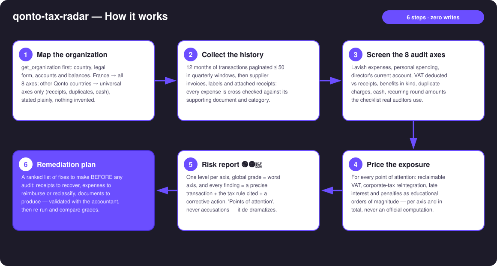
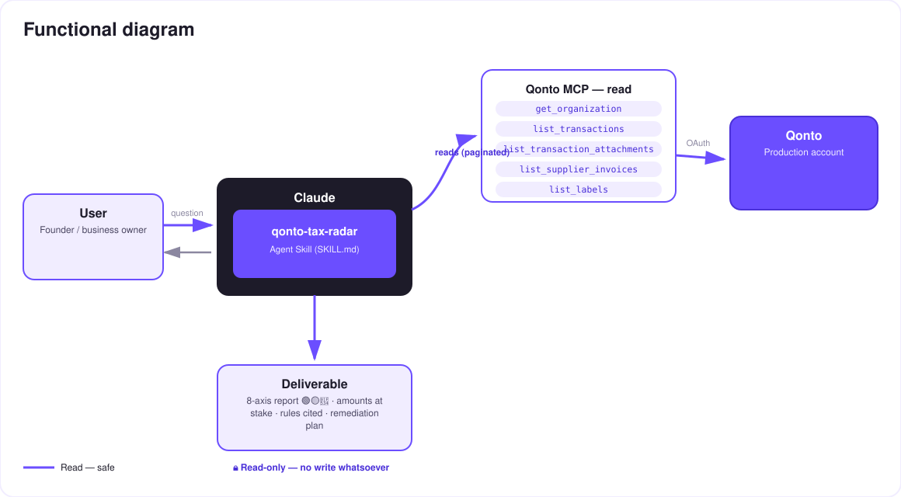

The tax pre-audit that works FOR you — the 8 real DGFIP verification axes, run on your Qonto account before the tax office does.
The number-one fear of French company directors is the tax audit — and nobody knows where they're vulnerable until the letter arrives. The skill flips the roles: it screens Qonto transactions against the 8 verification axes real auditors use, and hands over the report first:
Lavish expenses, personal spending, director's current account, VAT vs receipts, benefits in kind, duplicates, cash, round amounts.
Every point = a precise transaction + the tax rule cited + a risk level + a fix. Never an accusation.
Reclaimable VAT, corporate-tax reintegrations, interest and penalties — educational orders of magnitude.
The fixes to make BEFORE the tax office asks — then re-run the skill and watch the grade improve.
Would someone run this on a Monday morning? It's the quarterly "sleep well" ritual — and priceless the week before the accountant's annual review.
| Prerequisite | Detail | Required |
|---|---|---|
| Qonto production account | Adapts to any organization — get_organization first, nothing hardcoded | ✅ |
| Country | 8 axes and cited rules: France. Other Qonto countries (DE, ES, IT…): universal axes only (receipts, duplicates, cash, round amounts), stated plainly | ℹ️ detected |
| Qonto MCP connected | Official connector (claude.ai / Claude Desktop), OAuth login | ✅ |
| ≥ 12 months of history | Below that: partial coverage announced, no invented findings | ⭕ |
| Write access, consent | None — fully read-only, there is literally nothing to authorize | — |

attachment_ids, attachment_required, vat_amount do most of the work; list_transaction_attachments only verifies transactions about to be flaggedemitted_at (settled_at lags 1–2 days — a Sunday purchase can show up on Tuesday)403 missing oauth scope on list_cash_flow_categories → expected on the claude.ai connector, labels as fallback
Fully read-only — the key point: there are only solid arrows (reads). No write tool is ever called: the skill cannot modify a transaction, set a label, or move a cent. It's the auditor sitting on your side of the desk.
| # | Axis | What the skill detects | Rule cited |
|---|---|---|---|
| 1 | Lavish expenses | High-end restaurants (amount per sitting), travel, gifts above thresholds (VAT on gifts recoverable ≤ €73 incl. tax /yr/beneficiary; statement 2067 if gifts > €3,000/yr or receptions > €6,100/yr) | art. 39-4 CGI; art. 28-00 A ann. IV CGI |
| 2 | Personal spending as business | Weekend/Sunday purchases, merchants inconsistent with the business purpose (gaming, clothing, leisure), consumer subscriptions | art. 39-1 CGI; abnormal management act |
| 3 | Director's current account | Transfers to personal-looking beneficiaries, back-and-forth flows with the director, debit-balance patterns | art. L223-21 C. com.; art. 111-a CGI |
| 4 | VAT deducted vs receipts | vat_amount > 0 and no attachment on file → VAT deducted with no invoice to show | art. 271 II CGI — no invoice, no deduction |
| 5 | Benefits in kind | Vehicle, phone, housing, mixed-use subscriptions paid by the company with no sign of declaration | art. 82 CGI; BOSS |
| 6 | Duplicate charges | has_duplicates on supplier invoices; same counterparty + same amount within ±72 h | art. 54 CGI; art. 1729 (context only) |
| 7 | Cash | Recurring round withdrawals; professional cash payments > €1,000 | art. L112-6 + D112-3 CMF |
| 8 | Recurring round amounts | Regular round transfers to one beneficiary with no matching invoice | art. 54 CGI — burden of proof |
🟢🟡🔴 per axis, driven by the count and the amounts of findings. Global grade = worst axis: a real audit follows the weakest point. Enforced wording: "point of attention", "to document" — never "fraud".
| Output | Format | When |
|---|---|---|
| Conversation reply | Global banner + 8-axis table + findings detail + remediation plan (markdown) | Always — the baseline |
| Interactive "pre-audit notice" | HTML file/artifact: global grade, per-axis gauges, findings table, checklist | When the host renders files (claude.ai artifacts, Claude Desktop, Claude Code); automatic fallback to markdown |
| Comparative re-run | Same report, with the grade's evolution | Every re-run — the retention loop |
The ≤ 3-minute demo attached to the PR walks through: the fear → launching the pre-audit → findings axis by axis (rule cited on screen) → the report dropping ("2 red flags: €1,430 of VAT deducted with no receipt on file, and 3 expenses to reclassify — fix that this month and your file is clean") → the guardrails. It runs live on a real production account.
| Idea | Effort | Note |
|---|---|---|
Assisted remediation: request_attachment_upload + "to document" labels, behind explicit consent | Low | The writes exist in the MCP — v1 is deliberately read-only, that's the positioning |
| Country-specific audit grids (DE · ES · IT…) | Medium | Qonto is pan-European; v1 = France + universal axes |
| Optional multi-MCP enrichment: cross-check axis 4 against invoices found in Gmail/Drive | Medium | Detected dynamically — activates when the MCP is present, otherwise the skill says so and continues |
| Grade tracking over time (re-run history) | Low | The retention loop, quantified |
| 9th axis: revenue coherence (paid invoices vs actual inflows) | Medium | Already in the original proposal's DNA |